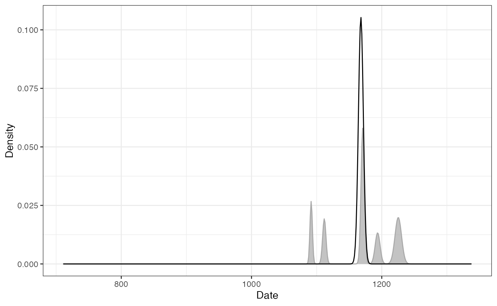

Not All Dates Are Created Equal
This vignette presents different methods for dating archaeological assemblages using artifact count data. Here, dating refers to “the placement in time of events relative to one another or to any established scale of temporal measurement” (Dean 1978). This involves distinguishing between relative (that provide only a chronological sequence of events) and absolute dating methods (that yield a calendric indication and may provide the duration of an event) (O’Brien and Lyman 2002). Strictly speaking, there is no absolute dating given how dates are produced and given that any date refers to a scale. The distinction between absolute and relative time can be rephrased more clearly as quantifiable vs. non-quantifiable (O’Brien and Lyman 2002): absolute dates “are expressed as points on standard scales of time measurement” (Dean 1978).
We will keep here the distinction between a date an age as formulated by Colman, Pierce, and Birkeland (1987): “a date is a specific point in time, whereas an age is an interval of time measured back from the present.” Dealing with dates in archaeology can be tricky if one does not take into account the sources of the chronological information. In most cases, a date represents a terminus for a given archaeological assemblage. That is, a date before (terminus ante-quem) or after (terminus post-quem) which the formation process of the assemblage took place. This in mind, one obvious question that should underlie any investigation is what does the date represent?
First, let’s be more formal:
- An archaeological event is determined by its unknown calendar date \(\theta\).
- \(\theta\) can be addressed by one or more of calendar dates \(t\) with associated error \(\delta t\).
- \(t \pm \delta t\) can be provided by different means and is assumed to be related to the event.
This implies that:
- There are no error-free dates in archaeology (although uncertainties cannot always be quantified).
- Errors are assumed here to be symmetrical. This is true for most physical dating methods, but may be false after some data processing (e. g. 14C calibration).
For a set of \(m\) assemblages in which \(p\) different types of artifact were recorded, let \(X = \left[ x_{ij} \right] ~\forall i \in \left[ 1,m \right], j \in \left[ 1,p \right]\) be the \(m \times p\) count matrix with row and column sums:
\[ \begin{align} x_{i \cdot} = \sum_{j = 1}^{p} x_{ij} && x_{\cdot j} = \sum_{i = 1}^{m} x_{ij} && x_{\cdot \cdot} = \sum_{i = 1}^{m} x_{i \cdot} = \sum_{j = 1}^{p} x_{\cdot j} && \forall x_{ij} \in \mathbb{N} \end{align} \]
Note that all \(x_{ij}\) are assumed to be error-free.
Mean Ceramic Date
Definition
The Mean Ceramic Date (MCD) is a point estimate of the occupation of an archaeological site (South 1977). The MCD is estimated as the weighted mean of the date midpoints of the ceramic types \(t_j\) (based on absolute dates or the known production interval) found in a given assemblage. The weights are the conditional frequencies of the respective types in the assemblage.
The MCD is defined as: \[ t^{MCD}_i = \sum_{j = 1}^{p} t_j \times \frac{x_{ij}}{x_{i \cdot}} \]
The MCD error is defined as: \[ \delta t^{MCD}_i = \sqrt{ \sum_{j = 1}^{p} \left( \delta t_j \times \frac{x_{ij}}{x_{i \cdot}} \right)^2 } \]
Limitation
The MCD is a point estimate: knowing the mid-date of an assemblage and not knowing the time span of accumulation might be short sighted. MCD offers a rough indication of the chronological position of an assemblage, but does not tell if an assemblage represents ten or 100 years.
Usage
## Coerce the zuni dataset to an abundance (count) matrix
zuni_count <- as_count(zuni)
## Set the start and end dates for each ceramic type
zuni_dates <- list(
LINO = c(600, 875), KIAT = c(850, 950), RED = c(900, 1050),
GALL = c(1025, 1125), ESC = c(1050, 1150), PUBW = c(1050, 1150),
RES = c(1000, 1200), TULA = c(1175, 1300), PINE = c(1275, 1350),
PUBR = c(1000, 1200), WING = c(1100, 1200), WIPO = c(1125, 1225),
SJ = c(1200, 1300), LSJ = c(1250, 1300), SPR = c(1250, 1300),
PINER = c(1275, 1325), HESH = c(1275, 1450), KWAK = c(1275, 1450)
)
## Calculate date midpoint
zuni_mid <- vapply(X = zuni_dates, FUN = mean, FUN.VALUE = numeric(1))
zuni_error <- vapply(X = zuni_dates, FUN = diff, FUN.VALUE = numeric(1)) / 2
## Calculate MCD
## (we use a bootstrapping procedure to estimate the confidence interval)
zuni_mcd <- date_mcd(zuni_count, dates = zuni_mid, errors = zuni_error)
head(zuni_mcd)
#> id date error lower upper
#> 1 LZ1105 1162.5000 49.03861 1160.8949 1163.1739
#> 2 LZ1103 1137.8378 18.82518 1135.4458 1138.7022
#> 3 LZ1100 1154.4643 24.20615 1153.2114 1156.9083
#> 4 LZ1099 1090.6250 26.51650 1090.3344 1090.8656
#> 5 LZ1097 1092.1875 26.51650 1085.2737 1091.9513
#> 6 LZ1096 841.0714 43.59484 835.3453 843.0689
## Plot dates
set_dates(zuni_count) <- list(value = zuni_mcd$date, error = zuni_mcd$error)
plot_date(zuni_count, select = 1:15, sort = "asc") +
ggplot2::labs(title = "Mean Ceramic Date") +
ggplot2::theme_bw() +
ggplot2::theme(legend.position = "none")
Event & Accumulation Date
Definition
Event and accumulation dates are density estimates of the occupation and duration of an archaeological site (Bellanger, Husi, and Tomassone 2006; Bellanger, Tomassone, and Husi 2008; Bellanger and Husi 2012).
The event date is an estimation of the terminus post-quem of an archaeological assemblage. The accumulation date represents the “chronological profile” of the assemblage. According to Bellanger and Husi (2012), accumulation date can be interpreted “at best […] as a formation process reflecting the duration or succession of events on the scale of archaeological time, and at worst, as imprecise dating due to contamination of the context by residual or intrusive material.” In other words, accumulation dates estimate occurrence of archaeological events and rhythms of the long term.
Event Date
Event dates are estimated by fitting a Gaussian multiple linear regression model on the factors resulting from a correspondence analysis - somewhat similar to the idea introduced by Poblome and Groenen (2003). This model results from the known dates of a selection of reliable contexts and allows to predict the event dates of the remaining assemblages.
First, a correspondence analysis (CA) is carried out to summarize the information in the count matrix \(X\). The correspondence analysis of \(X\) provides the coordinates of the \(m\) rows along the \(q\) factorial components, denoted \(f_{ik} ~\forall i \in \left[ 1,m \right], k \in \left[ 1,q \right]\).
Then, assuming that \(n\) assemblages are reliably dated by another source, a Gaussian multiple linear regression model is fitted on the factorial components for the \(n\) dated assemblages:
\[ t^E_i = \beta_{0} + \sum_{k = 1}^{q} \beta_{k} f_{ik} + \epsilon_i ~\forall i \in [1,n] \] where \(t^E_i\) is the known date point estimate of the \(i\)th assemblage, \(\beta_k\) are the regression coefficients and \(\epsilon_i\) are normally, identically and independently distributed random variables, \(\epsilon_i \sim \mathcal{N}(0,\sigma^2)\).
These \(n\) equations are stacked together and written in matrix notation as
\[ t^E = F \beta + \epsilon \]
where \(\epsilon \sim \mathcal{N}_{n}(0,\sigma^2 I_{n})\), \(\beta = \left[ \beta_0 \cdots \beta_q \right]' \in \mathbb{R}^{q+1}\) and
\[ F = \begin{bmatrix} 1 & f_{11} & \cdots & f_{1q} \\ 1 & f_{21} & \cdots & f_{2q} \\ \vdots & \vdots & \ddots & \vdots \\ 1 & f_{n1} & \cdots & f_{nq} \end{bmatrix} \]
Assuming that \(F'F\) is nonsingular, the ordinary least squares estimator of the unknown parameter vector \(\beta\) is:
\[ \widehat{\beta} = \left( F'F \right)^{-1} F' t^E \]
Finally, for a given vector of CA coordinates \(f_i\), the predicted event date of an assemblage \(t^E_i\) is:
\[ \widehat{t^E_i} = f_i \hat{\beta} \]
The endpoints of the \(100(1 − \alpha)\)% associated prediction confidence interval are given as:
\[ \widehat{t^E_i} \pm t_{\alpha/2,n-q-1} \sqrt{\widehat{V}} \]
where \(\widehat{V_i}\) is an estimator of the variance of the prediction error: \[ \widehat{V_i} = \widehat{\sigma}^2 \left( f_i^T \left( F'F \right)^{-1} f_i + 1 \right) \]
were \(\widehat{\sigma} = \frac{\sum_{i=1}^{n} \left( t_i - \widehat{t^E_i} \right)^2}{n - q - 1}\).
The probability density of an event date \(t^E_i\) can be described as a normal distribution:
\[ t^E_i \sim \mathcal{N}(\widehat{t^E_i},\widehat{V_i}) \]
Accumulation Date
As row (assemblages) and columns (types) CA coordinates are linked together through the so-called transition formulae, event dates for each type \(t^E_j\) can be predicted following the same procedure as above.
Then, the accumulation date \(t^A_i\) is defined as the weighted mean of the event date of the ceramic types found in a given assemblage. The weights are the conditional frequencies of the respective types in the assemblage (akin to the MCD).
The accumulation date is estimated as: \[ \widehat{t^A_i} = \sum_{j = 1}^{p} \widehat{t^E_j} \times \frac{x_{ij}}{x_{i \cdot}} \]
The probability density of an accumulation date \(t^A_i\) can be described as a Gaussian mixture:
\[ t^A_i \sim \frac{x_{ij}}{x_{i \cdot}} \mathcal{N}(\widehat{t^E_j},\widehat{V_j}^2) \]
Interestingly, the integral of the accumulation date offers an estimates of the cumulative occurrence of archaeological events, which is close enough to the definition of the tempo plot introduced by Dye (2016).
Limitation
Event and accumulation dates estimation relies on the same conditions and assumptions as the matrix seriation problem. Dunnell (1970) summarizes these conditions and assumptions as follows.
The homogeneity conditions state that all the groups included in a seriation must:
- Be of comparable duration.
- Belong to the same cultural tradition.
- Come from the same local area.
The mathematical assumptions state that the distribution of any historical or temporal class:
- Is continuous through time.
- Exhibits the form of a unimodal curve.
Theses assumptions create a distributional model and ordering is accomplished by arranging the matrix so that the class distributions approximate the required pattern. The resulting order is inferred to be chronological.
Predicted dates have to be interpreted with care: these dates are highly dependent on the range of the known dates and the fit of the regression.
Usage
## Bellanger et al. did not publish the data supporting their
## demonstration: no replication of their results is possible.
## Here is a pseudo-replication using the zuni dataset and results of the
## previous example.
## Coerce the zuni dataset to an abundance (count) matrix
zuni_count <- as_count(zuni)
## Randomly picks 100 assemblages and assume that they are reliably dated
## (this is NOT a real example)
set.seed(12345)
train_index <- sample(seq_len(nrow(zuni_count)), size = 100, replace = FALSE)
train_dates <- zuni_mcd[train_index, 2]
names(train_dates) <- zuni_mcd[train_index, 1]
set_dates(zuni_count) <- train_dates
## Model the event and accumulation date for each assemblage
model <- date_event(zuni_count, cutoff = 90)
summary(model[["model"]])
#>
#> Call:
#> stats::lm(formula = date ~ ., data = contexts)
#>
#> Residuals:
#> Min 1Q Median 3Q Max
#> -5.3165 -1.0231 -0.0111 0.5915 14.3644
#>
#> Coefficients:
#> Estimate Std. Error t value Pr(>|t|)
#> (Intercept) 1165.0648 0.3614 3223.917 < 2e-16 ***
#> Dim1 -155.9433 0.2845 -548.112 < 2e-16 ***
#> Dim2 -21.2659 0.2611 -81.444 < 2e-16 ***
#> Dim3 -0.1877 0.3344 -0.561 0.5760
#> Dim4 -10.0345 0.4744 -21.153 < 2e-16 ***
#> Dim5 -0.8887 0.4414 -2.013 0.0471 *
#> Dim6 -6.0487 0.3069 -19.712 < 2e-16 ***
#> Dim7 -5.7940 0.4983 -11.628 < 2e-16 ***
#> Dim8 -10.8845 0.5445 -19.988 < 2e-16 ***
#> Dim9 4.0941 0.4412 9.279 9.04e-15 ***
#> ---
#> Signif. codes: 0 '***' 0.001 '**' 0.01 '*' 0.05 '.' 0.1 ' ' 1
#>
#> Residual standard error: 2.584 on 90 degrees of freedom
#> Multiple R-squared: 0.9997, Adjusted R-squared: 0.9997
#> F-statistic: 3.92e+04 on 9 and 90 DF, p-value: < 2.2e-16
## Estimated event dates
head(model[["rows"]])
#> date lower upper error
#> LZ1105 1160.9936 1159.5885 1162.3986 0.7072351
#> LZ1103 1139.2874 1138.4197 1140.1552 0.4367789
#> LZ1100 1156.3392 1155.3922 1157.2862 0.4766701
#> LZ1099 1093.4200 1091.4810 1095.3590 0.9759917
#> LZ1097 1092.5475 1090.9819 1094.1130 0.7880311
#> LZ1096 841.6006 840.2618 842.9394 0.6738873## Activity plot
plot_date(model, type = "activity", select = "LZ1105") +
ggplot2::theme_bw()
## Tempo plot
plot_date(model, type = "tempo", select = "LZ1105") +
ggplot2::theme_bw()
Resampling methods can be used to check the stability of the resulting model. If jackknife is TRUE, one type/fabric is removed at a time and all statistics are recalculated. In this way, one can assess whether certain type/fabric has a substantial influence on the date estimate. If bootstrap is TRUE, a large number of new bootstrap assemblages is created, with the same sample size, by resampling the original assemblage with replacement. Then, examination of the bootstrap statistics makes it possible to pinpoint assemblages that require further investigation.
## Check model variability
## Jackknife fabrics
refined_jack <- refine_dates(model, method = "jackknife", n = 1000)
head(refined_jack)
#> id date lower upper error bias
#> LZ1105 LZ1105 1165.1869 1163.7819 1166.5920 0.7072351 71.28699
#> LZ1103 LZ1103 1134.7257 1133.8580 1135.5935 0.4367789 -77.54874
#> LZ1100 LZ1100 1157.0049 1156.0579 1157.9518 0.4766701 11.31673
#> LZ1099 LZ1099 1085.7619 1083.8229 1087.7009 0.9759917 -130.18801
#> LZ1097 LZ1097 1090.0333 1088.4677 1091.5988 0.7880311 -42.74127
#> LZ1096 LZ1096 842.8417 841.5029 844.1805 0.6738873 21.09765
## Bootstrap of assemblages
refined_boot <- refine_dates(model, method = "bootstrap", n = 1000)
head(refined_boot)
#> id min Q05 mean Q95 max
#> 1 LZ1105 1104.4649 1133.676 1160.8277 1188.7053 1208.119
#> 2 LZ1103 1062.3846 1095.412 1139.9240 1182.4738 1214.069
#> 3 LZ1100 1047.9456 1107.954 1156.5407 1204.0364 1225.284
#> 4 LZ1099 1084.0723 1087.828 1093.4948 1099.5009 1106.597
#> 5 LZ1097 912.6374 1001.570 1091.8625 1174.8735 1234.259
#> 6 LZ1096 737.2890 737.289 842.9045 945.9123 1050.224References
Bellanger, L., Ph. Husi, and R. Tomassone. 2006. “Statistical Aspects of Pottery Quantification for the Dating of Some Archaeological Contexts.” Archaeometry 48 (1): 169–83. https://doi.org/10.1111/j.1475-4754.2006.00249.x.
Bellanger, Lise, and Philippe Husi. 2012. “Statistical Tool for Dating and Interpreting Archaeological Contexts Using Pottery.” Journal of Archaeological Science 39 (4): 777–90. https://doi.org/10.1016/j.jas.2011.06.031.
Bellanger, L., R. Tomassone, and P. Husi. 2008. “A Statistical Approach for Dating Archaeological Contexts.” Journal of Data Science 6: 135–54.
Colman, Steven M., Kenneth L. Pierce, and Peter W. Birkeland. 1987. “Suggested Terminology for Quaternary Dating Methods.” Quaternary Research 28 (2): 314–19. https://doi.org/10.1016/0033-5894(87)90070-6.
Dean, Jeffrey S. 1978. “Independent Dating in Archaeological Analysis.” In Advances in Archaeological Method and Theory, 223–55. Elsevier. https://doi.org/10.1016/B978-0-12-003101-6.50013-5.
Dunnell, Robert C. 1970. “Seriation Method and Its Evaluation.” American Antiquity 35 (3): 305–19. https://doi.org/10.2307/278341.
Dye, Thomas S. 2016. “Long-Term Rhythms in the Development of Hawaiian Social Stratification.” Journal of Archaeological Science 71 (July): 1–9. https://doi.org/10.1016/j.jas.2016.05.006.
O’Brien, Michael J, and R. Lee Lyman. 2002. Seriation, Stratigraphy, and Index Fossils: The Backbone of Archaeological Dating. Dordrecht: Springer.
Poblome, J., and P. J. F. Groenen. 2003. “Constrained Correspondence Analysis for Seriation of Sagalassos Tablewares.” In The Digital Heritage of Archaeology, edited by M. Doerr and A. Sarris. Hellenic Ministry of Culture.
South, S. A. 1977. Method and Theory in Historical Archaeology. Studies in Archeology. New York: Academic Press.